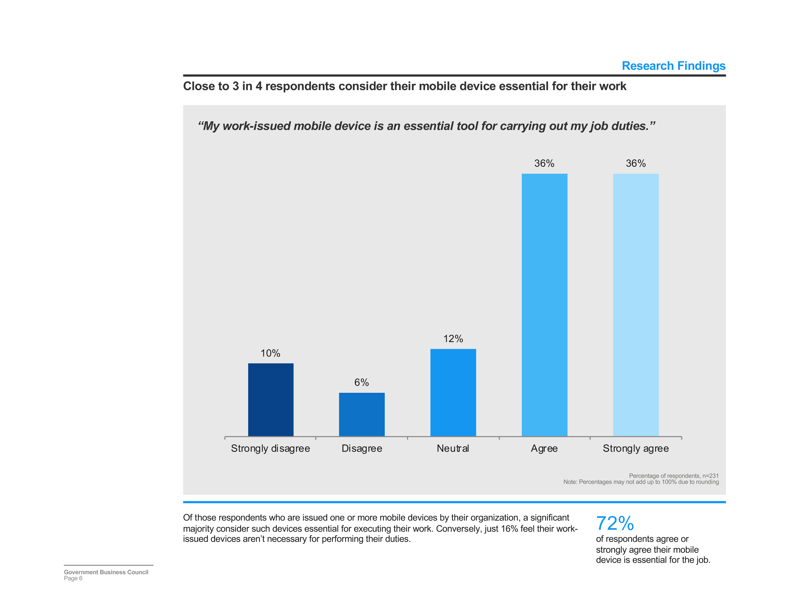
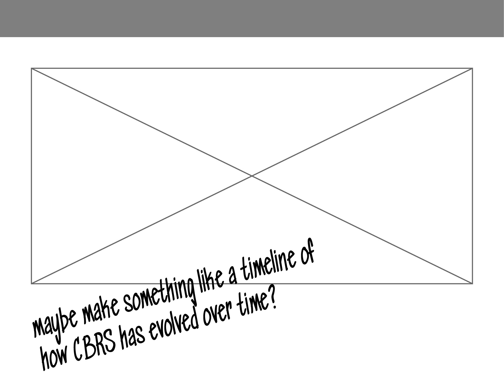

The Innovation Band
Web-based Infographic
Design and execution of interactive infographic based on internal research survey results.
Wireframing & Content
Worked with researchers to develop a wireframe based off their previously published survey report.


Interactivity
Logisitics
In order to make this happen, I fostered a relationship with IT to be able to work outside of our internal CMS' limited capabilities and allow the URL to display as govexec.com, but be built through wordpress.
https://www.wp.govexecmediagroup.com/what-is-cbrs/wp-admin/